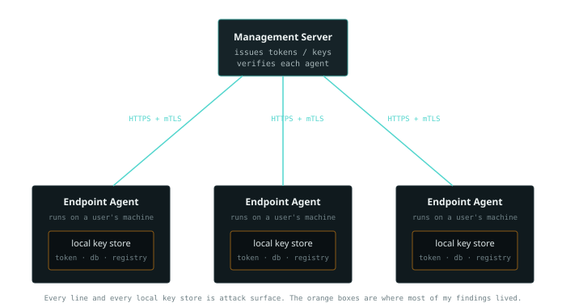

22 September 2024 · infra
Checking the security posture of an endpoint agent
A lot of products ship an agent, a small program that runs on the user's machine and talks to a central server. Monitoring tools, endpoint managers, backup clients, they all follow the same shape. I spent a good while testing these, and across a range of agents I found 30+ security issues. Almost none of them were clever exploits. They were the same handful of setup mistakes, repeated. So I turned what I found into a set of reusable checks, and that's what this post is: the areas worth looking at whenever an agent is in scope, on-prem or in the cloud.
What the setup looks like
Before the checks, picture the shape of it. One server hands out tokens and keys and verifies each agent. Many agents run out on user machines, each keeping some secrets locally so it can authenticate back to the server.

Two things jump out once you draw it. Every line between an agent and the server is a channel someone can sit on. And every agent is holding secrets on a machine you don't fully control, a machine that has other users on it. Most of my findings lived in that second place, the local key store, because it's easy to forget that "on the user's own machine" is not the same as "safe."
The areas I check
These group into five questions. Each one is where real issues showed up.
1. File and folder permissions
The agent's folder holds config, databases, sometimes keys. If those files are readable by any standard user on the machine, then a low-privileged user, or malware running as one, can walk in and read secrets meant only for the agent. This was the most common issue I found, and the easiest to miss, because on the developer's own admin machine everything "works." Check the actual permissions on the agent directory and every sensitive file in it, as a normal non-admin user.
2. How keys and tokens are stored
This is where most of the damage sat. A few things to look at, each of which I found broken somewhere:
- Tokens or keys sitting in plaintext instead of encrypted. If you can open the file and read the secret, so can anyone else on the box.
- Database files (the
.dbin the agent folder) left unencrypted and not password-protected, so any user can open them and read what's inside. - A default password on those databases, the same one for every install, with no way to change it. One leaked default unlocks every agent everywhere.
- Hardcoded keys in the code, for example a master key used to decrypt session keys. Once someone pulls it out of the binary, every agent using it is open.
- Secrets in the registry without restricted permissions. The registry is not a safe place by default; if you must use it, lock the key down to the agent owner only.
The theme across all of these: encryption at rest, unique secrets per install, and permissions that actually restrict who can read them.
3. Logging
Logs are the quiet leak. If the agent writes authentication tokens, keys, or other secrets into its log files, then a secret that was carefully encrypted at rest is now sitting in plaintext in a log that a normal user can read. I found tokens and keys printed straight into logs more than once. Grep the log output for anything that looks like a token or key while the agent runs normally.
4. The channel to the server
Everything the agent and server say to each other travels over the network. Two checks:
- Is HTTPS actually enforced? Not "supported", enforced. If the agent will also talk plain HTTP, an attacker on the network can force it down to HTTP and read the tokens in transit. Several agents I looked at supported HTTP and shared tokens in clear text over it.
- Does the server verify the agent, not just encrypt the channel? HTTPS stops eavesdropping, but on its own it doesn't prove the thing connecting is a real agent. Client certificates (mTLS), where the server only accepts agents presenting an authorized certificate, close that gap. Without it, anything that has a valid token can pretend to be an agent.
5. Agent identity
Each agent should have its own identity and its own keys. Two problems I'd look for: a shared decryption key across every agent in an install, so cracking one cracks all of them, and no unique agent ID, so the server can't tell agents apart and one agent could read or influence data meant for another. The fix for both is the same idea: unique credentials per agent, and a real identity the server checks.
Two things worth adding since
That list came out of what I found at the time. A couple of things sit alongside it that are worth folding in:
Token lifetime and rotation. Storage is half the story; the other half is how long a leaked secret stays useful. Short-lived tokens that rotate mean a token pulled off a machine is dead soon after, instead of forever. If the agent holds a long-lived static token, that's worth flagging even when it's stored correctly.
Old frameworks and libraries. An agent built on an end-of-life framework carries whatever known bugs that version has, and no patches are coming. Check what the agent is built on and whether it's still supported. This is boring and it's real; one of my findings was exactly this.
The pattern under all of it
Thirty-plus issues, and almost all of them reduce to one wrong assumption: that the user's own machine is a safe place to keep a secret. It isn't. It has other users, other software, and an owner who is not you. So the checks all come back to the same instinct: assume the machine is hostile, and see what a normal user on it can read, intercept, or reuse. If a secret survives that, the agent is in decent shape. Most of the ones I tested didn't, at first.